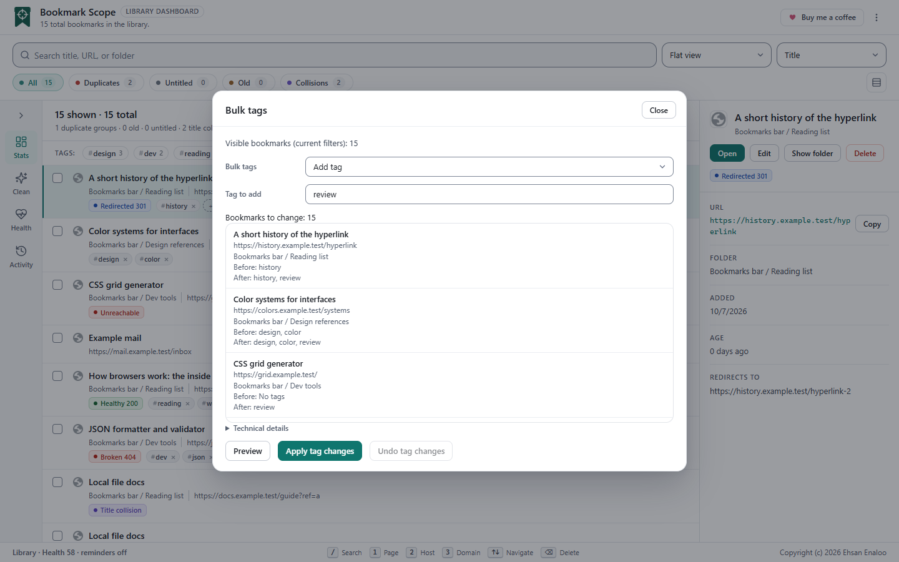

Tags in one minute#
- A tag is a short label such as
workorread later. A bookmark can have several. - Tags are normalised: lower-cased, trimmed, with runs of spaces collapsed, and unprintable characters removed.
Work,workandWORKbecome the same tag. - A tag can be up to 32 characters, and a bookmark can have up to 20 tags.
- Tags belong to the bookmark’s browser ID. They follow a bookmark when you move or rename it, and are removed when you delete it.
- Tags are stored by the extension on this browser profile only. Chrome does not store extra fields on a bookmark, and Bookmark Scope does not sync tags between devices. They are included in snapshots and in the JSON export (see Backup and restore).
Adding tags#
Bulk tags (works on many bookmarks at once)

Choose the targets
Select specific bookmarks, or leave nothing selected to target everything currently visible (after your search, chip and tag filters). The dialog names its scope, for example Visible bookmarks (current filters): 42, so check the number before continuing.
Open the tool
Choose Library tools → Bulk tags, or open the command palette and type bulk.
Pick the operation
Add tag (one field), Remove tag (one field), Rename tag and Merge tag (a source and a target field). Rename and Merge both replace the source tag with the target tag on the targeted bookmarks; use Merge when the target tag already exists elsewhere.
Preview
Choose Preview. You get Bookmarks to change: N and, for each bookmark, Before and After. Changing any field clears the preview so you cannot apply a stale one. A change that would exceed 20 tags on any bookmark is refused as a whole, with no partial changes.
Apply
Choose Apply tag changes. The result reads Changed / missing / conflicting with three numbers. Missing means a bookmark was deleted meanwhile; conflicting means its tags changed after the preview and it was left alone.
Undo for bulk tags
Undo tag changes sits inside the same dialog and reverses only the bookmarks whose tags still match the result you applied. If you or another window changed them since, they are reported as conflicts and not overwritten. This Undo lives in the open dashboard session and is gone after a reload.
Tag a whole site in two steps
- Search
domain:exampleso only that site is visible. - Open Bulk tags, choose Add tag, type the tag, preview, apply.
The inline tag box on a row
Click a row to make it active; it then shows a dashed + add tag box. Type a tag and press Enter or , to add it; Esc clears the box. Each tag on a row has a small × to remove it. Clicking a tag’s name adds it to the tag filter. The same normalisation and limits apply (lower case, 32 characters, 20 per bookmark), and an invalid or empty tag shows a short error toast.
Finding by tag#
Use the Tags: chips above the list (see Tag chips). Selected chips combine with AND. Tag chips and the search box work together.
Editing a bookmark#
Select the row and press E, or use Edit in the detail panel or the row’s More actions menu. Change the title or address and save. The bookmark keeps its ID, folder and position.
Moving bookmarks (drag and drop)#
Drag a row and drop it on another row. Drop on the upper half of the target to insert before it, or the lower half to insert after. If the target is in a different folder, the bookmark moves into that folder at that position.
- If the dragged row is part of a multi-selection, all selected bookmarks move together, keeping their relative order.
- The toast reads Moved: N. Failed / not attempted: M. with Undo.
- Moves are applied one at a time. If one fails, the rest are not attempted and nothing is rolled back automatically. Undo restores only the moves that succeeded, and tells you if it could not complete.
- You cannot drop onto a bookmark you are dragging.
Moving changes folder and position only; the bookmark keeps its ID, date and tags.
Folders#
Bookmark Scope can show each bookmark’s folder, group by folder, filter by folder path and move bookmarks between folders by dropping. It does not create, rename, reorder or delete folders. Use Chrome’s own bookmark manager for that:
- Press Show in bookmarks (on a row) or Show folder (in the detail panel) to open the manager on that folder.
- Or choose Open Chrome bookmarks from the header menu.
When you restore a snapshot, Bookmark Scope does create a new folder to hold the restored tree; see Backup and restore.